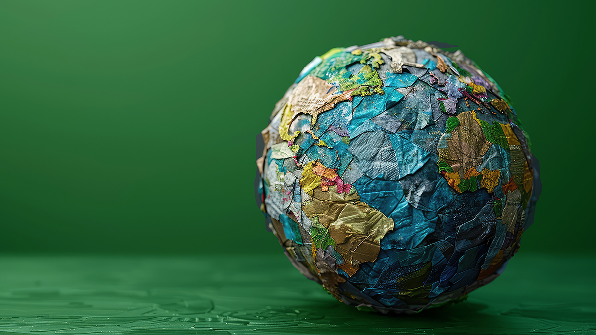

Son múltiples las ventajas del reciclaje, aunque pueden resumirse en que conserva los recursos naturales y reduce la sobreexplotación de materias primas protegiendo así los hábitats. Contribuye además a economizar energía ya que los productos reciclados prescinden de varios pasos imprescindibles en el proceso de fabricación. Es decir, se necesita mucha más energía para extraer, refinar, transportar y procesar materias primas que para transformar materiales reciclados ya disponibles.
Economía Circular
Así encaja la sostenibilidad en la industria del metal: Eficiencia y reciclaje
La industria metalúrgica es uno de los sectores que más energía consume, pero al mismo tiempo tiene que ser una pieza importante en la transición hacia un mundo sostenible. Sacar al mercado productos más eficientes y reintroducir los residuos metálicos en la cadena de valor tienen cada vez más peso.
Según el Instituto Nacional de la Salud de Estados Unidos, “se precisa un 95% menos de energía para reciclar aluminio que para fabricarlo a partir de materias primas, mientras que el uso de chatarra de acero en lugar de mineral virgen para fabricar acero nuevo requiere un 40% menos de agua y genera un 97% menos de desechos mineros”. “El acero reciclado ahorra un 60% de energía en la producción; los periódicos reciclados, un 40%; los plásticos reciclados, un 70%; y el vidrio reciclado, un 40%”.
Así, reducir la explotación de minas, canteras y bosques, evitar procesos como el refinado y la transformación industrial de esas materias primas, junto con el consiguiente ahorro de energía, contribuye notablemente a disminuir la emisión de gases de efecto invernadero (GEI) como el dióxido de carbono (CO2, el principal causante del calentamiento global), además de la contaminación del aire, el suelo y el agua. Para hacerse una idea: los 18 millones de toneladas de CO2 ahorrados cada año en Reino Unido gracias a los materiales reciclados equivalen a retirar de la circulación cinco millones de automóviles.
